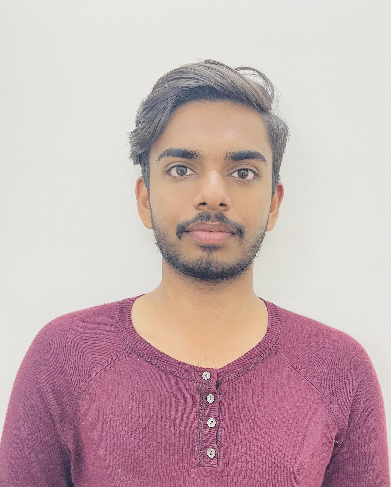
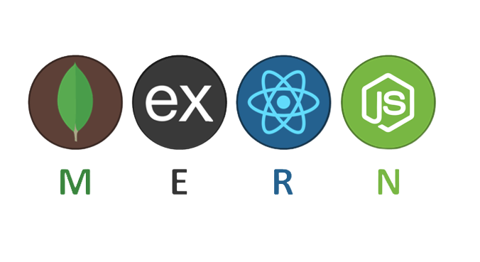
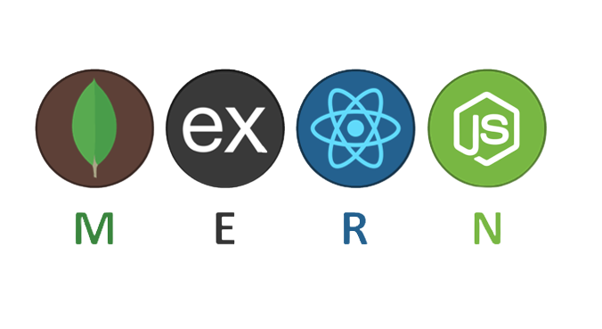

This is Surya

HELLO
I am a sophmore at IIT Dharwad in Dept. of EECE.
I have a keen interest in space data science, web-development and app development.
My Skills


Frontend Designing : Designing websites and making a responsive website using MERN. Prototyping using in figma.
Experience: Project made in SOI (Summer of Innovation) - Toolset Unbounded. For github repo click here
FITS Image Mapping : Handling fits Image formats using numpy and astropy libraries of python and mapping satellite Images for different terrain.
Experience : Participated in cosmoscope hosted by space and data science club of IIT-Dharwad.
Github repo LINK.